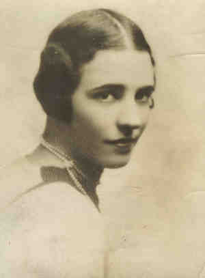

|
|
| 
Caro (Sybil) SHAW (1904-1988) |
Caro (Sybil) SHAW 271,272
Noted events in her life were: • Census, 12 Apr 1930, New York, New York Co., New York. 249 Caro married Dave Hennen CODDINGTON, son of Charles Egbert CODDINGTON and Lily Adolphina Gordon BROWN, on 31 Jan 1928 in Ritz Carlton Hotel, New York, New York Co., New York.261 (Dave Hennen CODDINGTON was born on 31 Jan 1886 in New York, New York Co., New York,235,263 died on 26 Jun 1956 in New York, New York Co., New York and was buried in Woodlawn Cmty, New York, New York Co., New York 264.). The cause of his death was prostate cancer. Noted events in their marriage were: • Divorce: Reno, Storey Co., Nevada. Marriage Notes: Married by Rev. Dom Leonard Sargent, O.S.B. Headmaster of Portsmouth Priory Catholic School Caro next married William Liseter AUSTIN Jr., son of William Liseter AUSTIN and Mary ROGERS, on 20 Jul 1938 in Rosemont, Montgomery Co., Pennsylvania.3394 (William Liseter AUSTIN Jr. was born on 21 Jul 1899 in Philadelphia, Philadelphia Co., Pennsylvania 3395,3396 and died on 11 Feb 1963 3396.) Noted events in their marriage were: • Marriage Notice, 21 Jul 1938. Caro next married Living |
|
only search Stockdale Coddington Genealogy |
Table of Contents | Surnames | Name List
This website was created 9 Apr 2025 with Legacy 10.0, a division of MyHeritage.com; content copyrighted and maintained by coddgenealogy at gmail d0t com